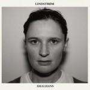

Music Reviews
-

Kendrick Lamar good kid, m.A.A.d city
Kendrick Lamar takes it back a decade or two on his major label debut. He's got the backing, he's got the guests, but has he got what it takes?
Joe Rivers wonders if anybody else could pull off the name 'Kendrick'... -
The Babies Our House on the Hill
While it’s hard to say whether or not Our House on the Hill is truly a great album, it’s clear that with this record, The Babies have defiantly surpassed the less-than-lukewarm expectations geared towards them to create a pop record ripe with personality and flavor.
Peter Quinton tucks The Babies into bed with this review of their latest effort -
The Sea And Cake Runner
The Sea And Cake's 10th album is their most accessible to date. If there were any justice in the world this would be their breakthough into the mainstream. Maybe they're happy on the margins. Either way it's a great album.
David John Wood dips his toe... -
Tim Hecker / Daniel Lopatin Instrumental Tourist
Combining the unique powers of drone-kings Tim Hecker and Oneohtrix Point Never's Daniel Lopatin, Instrumental Tourist offers more proof that these two are masters in their field, regardless of how necessary a collaborative effort like this really is anyway.
Peter Quinton drifts on waves of static and retro synthesizers in his latest review -
How to destroy angels_ An Omen EP
The second release from Trent Reznor's new group moves in a far more atmospheric direction than their first EP. The result is a constantly shifting soundscape that's great for both background listening and intense headphone exploration.
Joe Marvilli is haunted by... -

Crystal Castles III
The Canadian electronic duo invite you to their dance hall of dread, one that's equally profound in both sound and meaning.
Juan Edgardo Rodríguez can't look away... -

Lindstrøm Smalhans
The Norwegian space-disco producer's second album of 2012 colours well within the lines, but it is subtly clever enough to get away with it.
Stephen Wragg reviews... -
Emeralds Just To Feel Anything
Since breaking through, of a sort, with their 2010 album Does It Look Like I'm Here?, electronica revivalists Emeralds have kept themselves busy with various side-projects. Now they're back in full force, but has their prolificness resulted in a drying up of ideas?
Mark Davison will now be scouring ebay for vintage synths... -
The Soft Moon Zeros
The Soft Moon’s Zeros capitalizes on style and rekindles 80s post-punk/new wave nostalgia, creating a cool and dark, albeit dated, collection of songs.
Sean Caldwell thinks The Soft Moon is meant for cassette... -
Death Grips No Love Deep Web
The most intense and unapologetic band you can think of right now are back with another 13 songs of vulgar, complex industrial noise rock/rap.
Forrest Cardamenis keeps it cool...